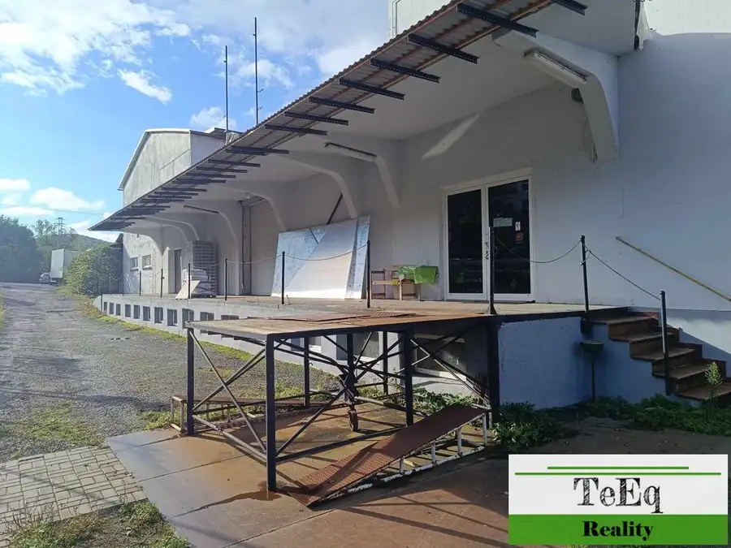
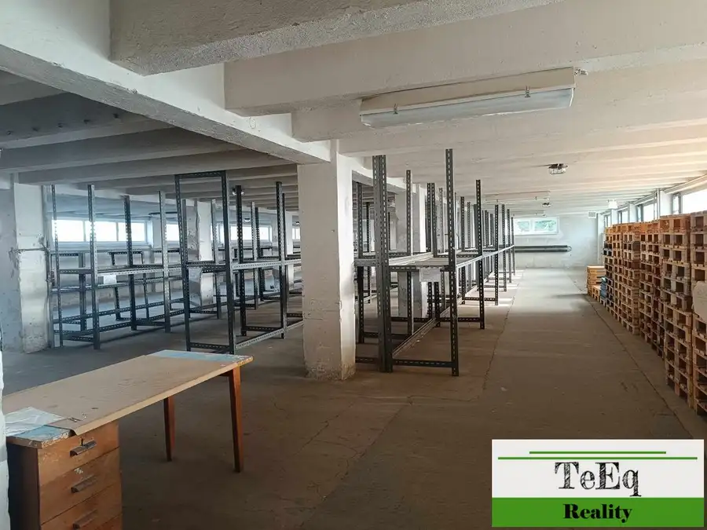
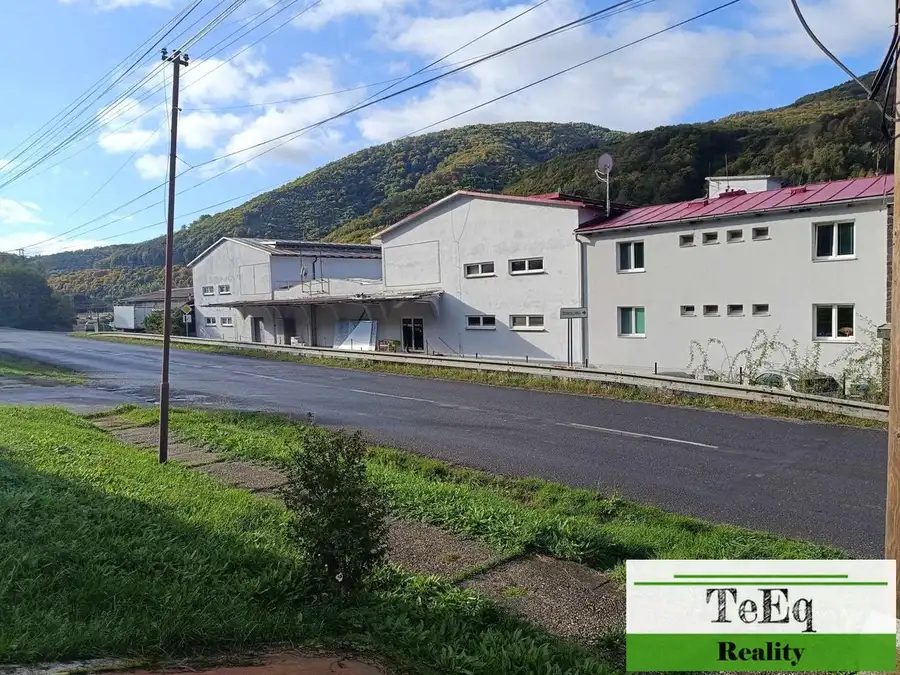
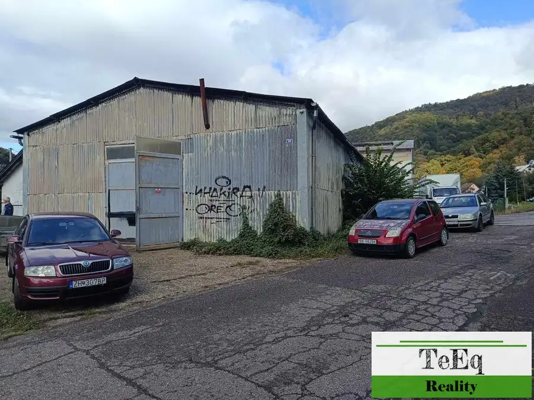
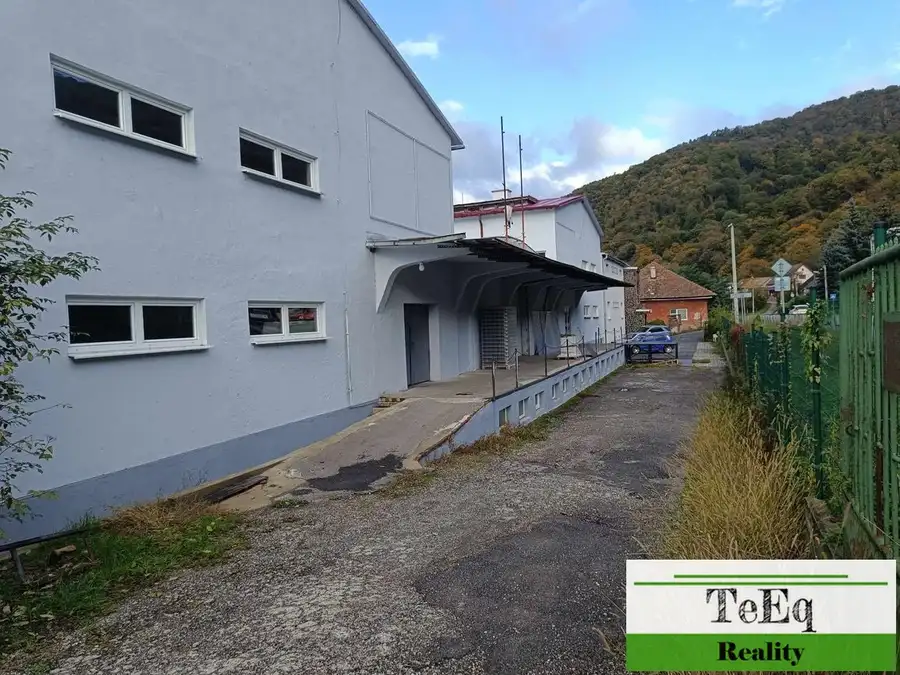
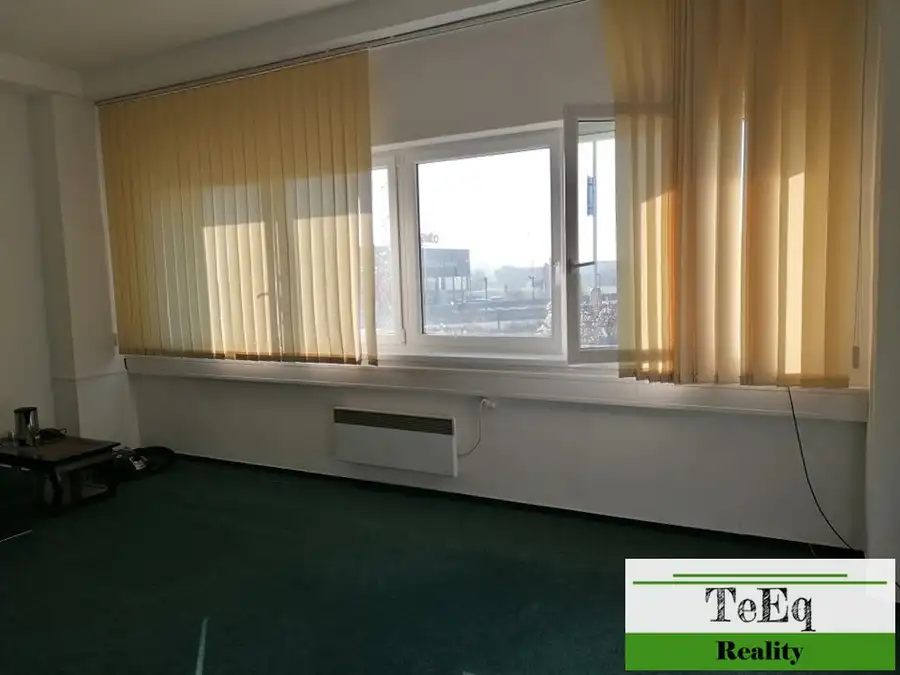
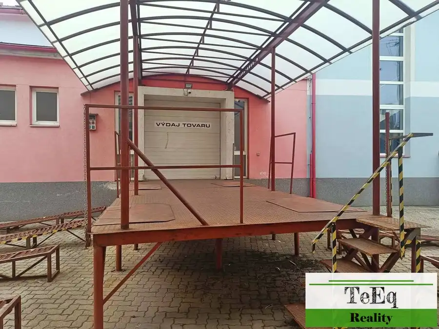
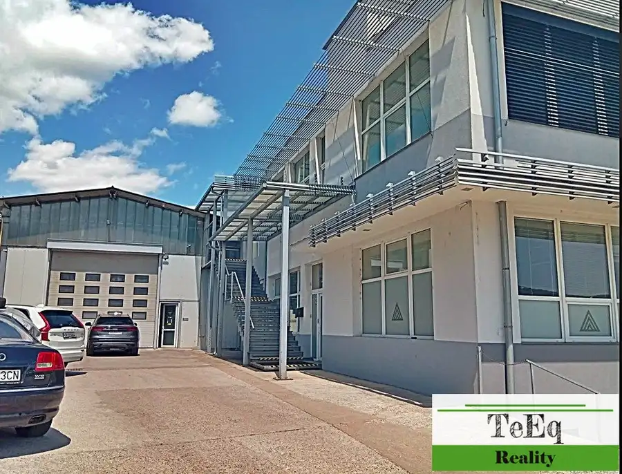

Na prenájom sklady pri Zvolene
Hronská Dúbrava





- Plocha1000 m²
- StavPôvodný stav
O nehnuteľnosti
ID-500159-27BBPonúkame na prenájom samostatný objekt iba 4 km od Zvolena v obci Hronská Dúbrava.Ide o skladovo-výrobný objekt v blízkosti napojenia na R1.Objekt je 3-podlažný, s nákladným výťahom.Možnosť prenajímať aj po častiach.K dispozícii nákladná rampa a aj nájazd na rampu.Budova má 3 podlažia:Suterén - 1000 m2, kde je stála teplota od 5 v zime a v lete do 18 stupňov.1. NP - 900 m2, kde je nakladacia rampa, možnosť nakládky a vykládky buď z boku alebo zo zadnej časti kamióna. Bezproblémová nakládka kamiónov, denne sa nakladalo aj 8 kamiónov.2. NP - 450 m2, sklad, montáž.3. NP - 450m2 podkrovie, tiež možnosť využitia, sklad, archív.K prenájmu je aj samostatný plechový sklad, vysoký cca 6 m. Veľká nákladná brána, bez rampy. Možnosť vojsť dnu aj s veľkým autom.Budova je v pôvodnom stave, možnosti sú rôzne podľa záujmu budúceho nájomníka.Výška stropu cca 2,8 m.Možnosť prenajať priestory aj individuálne.Cena je od 2,50 €/m2/mesiac + energie + DPH. (cena závisí od rozlohy, akú si prenajmete)V prípade záujmu o viac informácií, prípadne obhliadku, nás neváhajte kontaktovať: Zuzana Sliacka, 0902 380 897, zuzana.sliacka@teeq.sk.
Parametre
- Druh
- Priestor pre sklad
- Dátum zverejnenia
- 23. 10. 2025
- Energetický certifikát budovy
- nie je
- Rok výstavby
- 1989
- Stav nehnuteľnosti
- Pôvodný stav
- Typ
- Prenájom
- Typ konštrukcie
- Zmiešaná
- Úžitková plocha
- 1000 m²
Kde to je


Mohlo by Vás zaujímať

Komerčné priestoryNové Cena na vyžádáníNa prenájom kancelárie 24 m2 a 24 m2 Banská Bystrica Banská Bystrica 24 m²
Komerčné priestoryNové Cena na vyžádáníNa prenájom samostatný prevádzkový areál Banská Bystrica Banská Bystrica 1350 m²
Komerčné priestoryNové Cena na vyžádáníNa prenájom výrobno-skladovo-administratívne priestory 3000 m2 Banská Bystrica Banská Bystrica 3000 m²